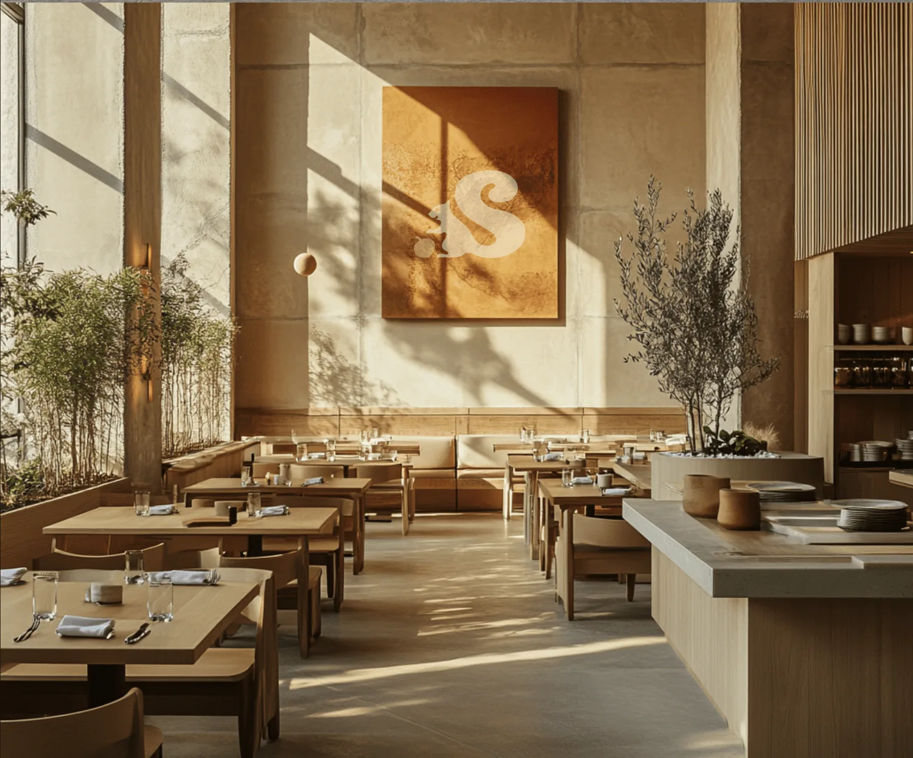
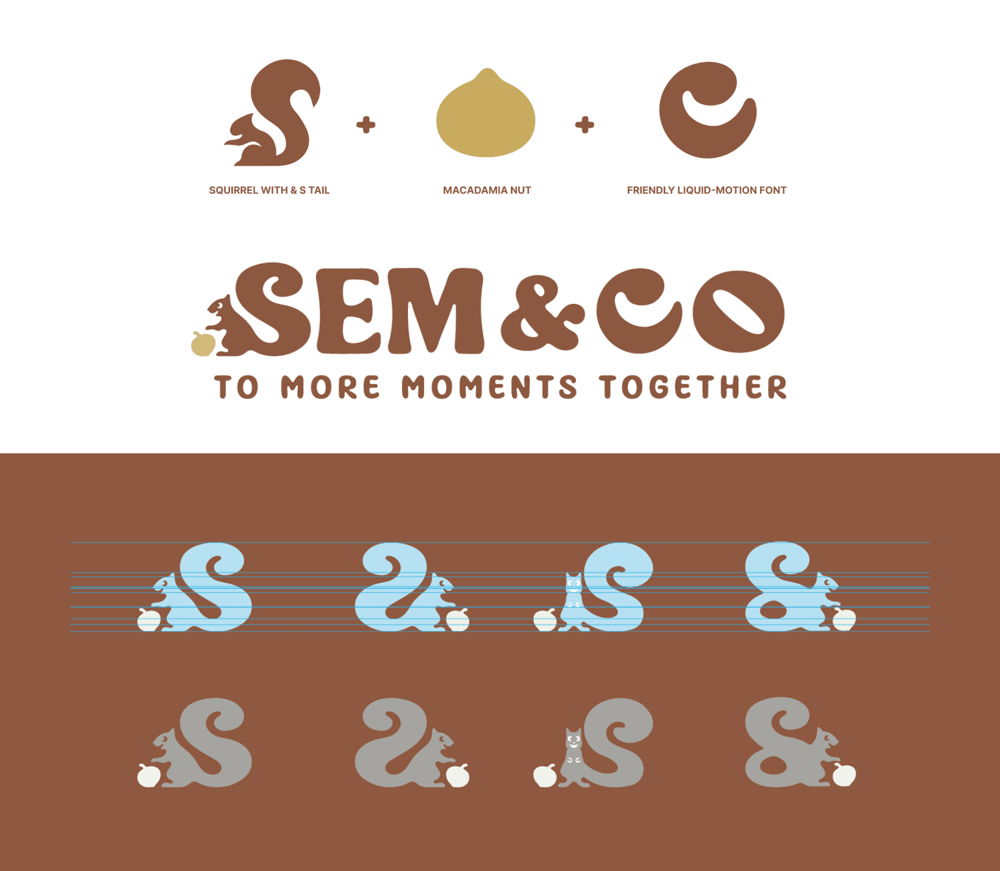
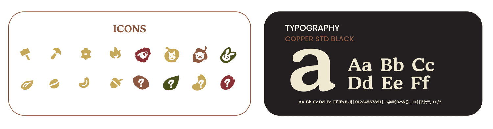
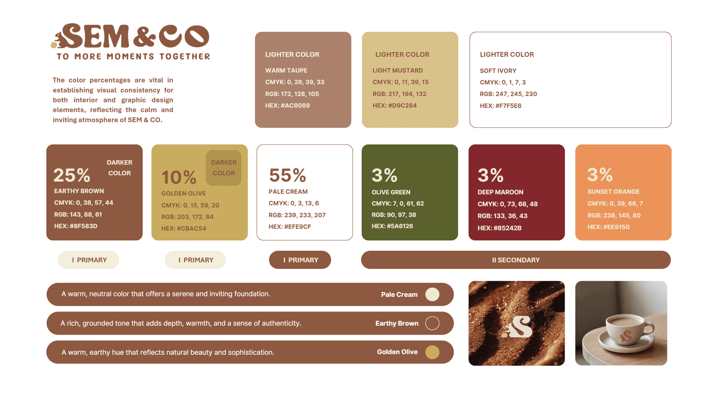
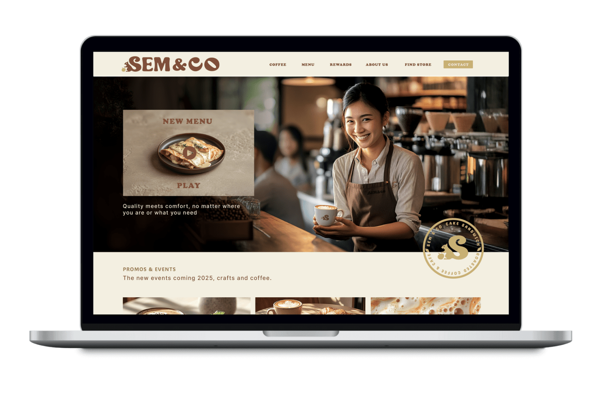
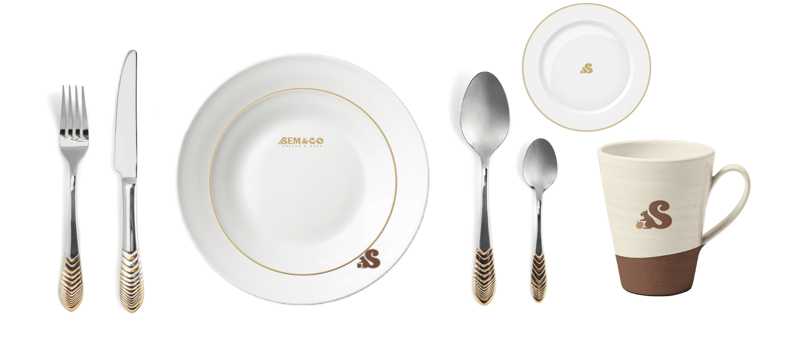
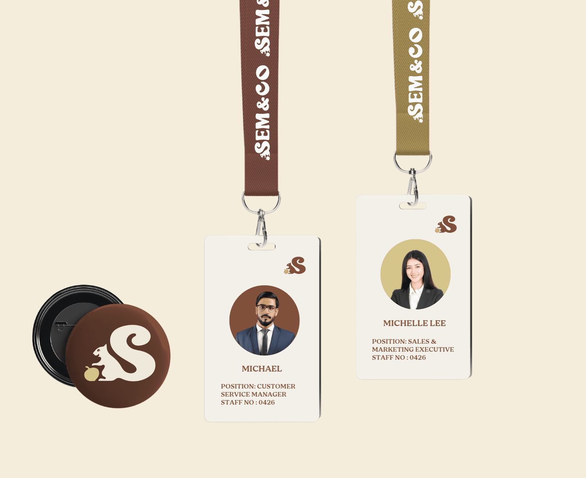
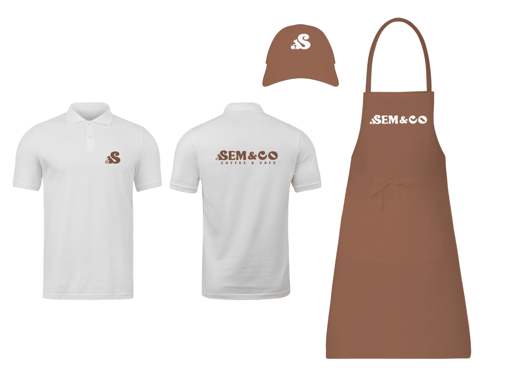
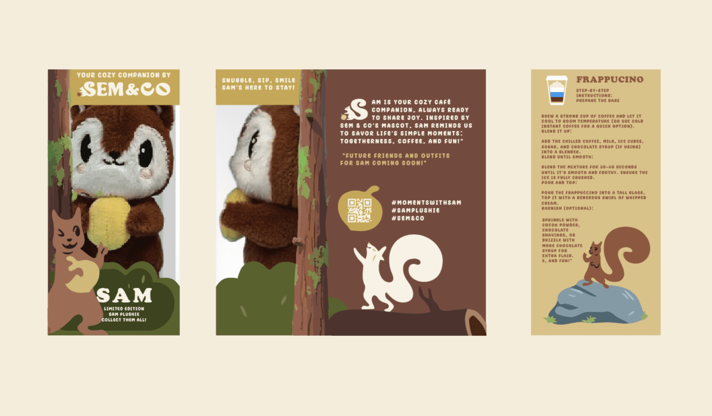
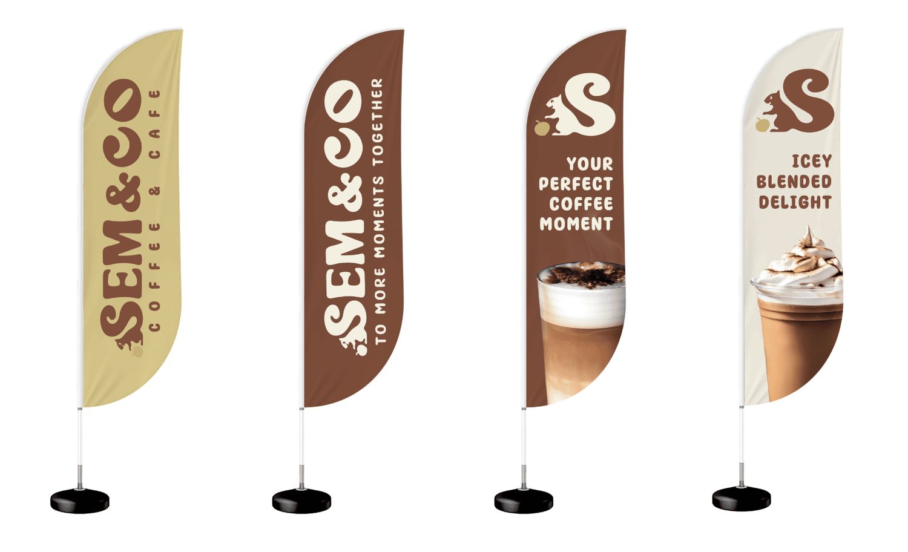

Back to work
Sem & Co Cafe

A warm cafe identity shaped around handcrafted coffee, neighbourhood comfort, and a playful hospitality system.



The visual language balances soft cafe warmth with clean, practical assets that can move across menus, serviceware, digital, and launch materials.




The system extends into customer-facing collateral, staff touchpoints, and outdoor brand moments for a memorable cafe experience.

